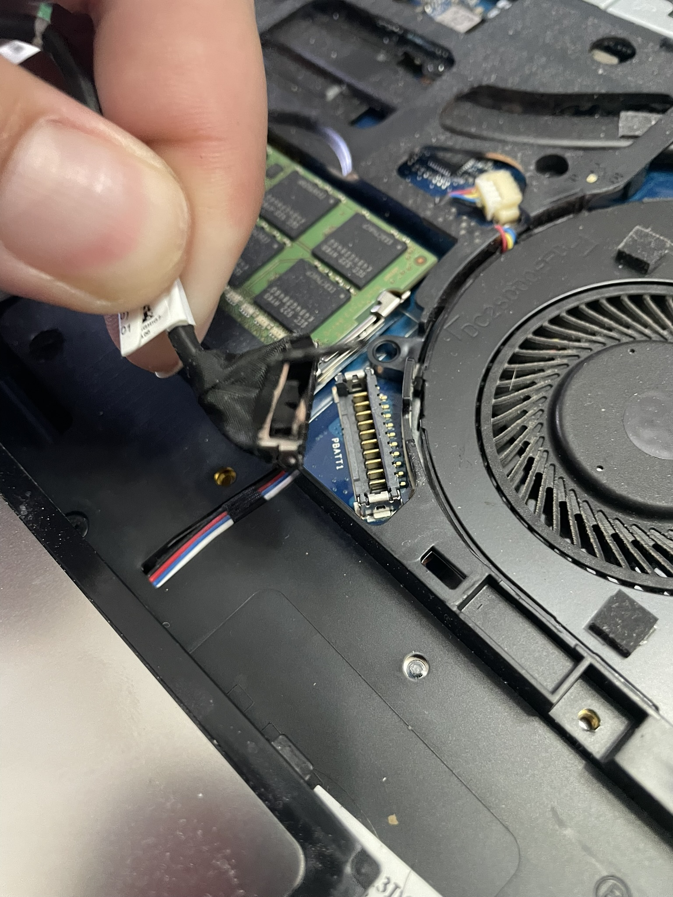
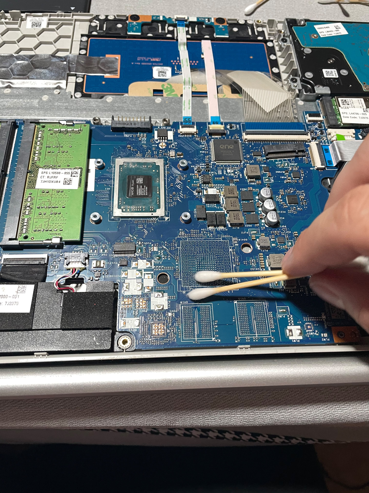
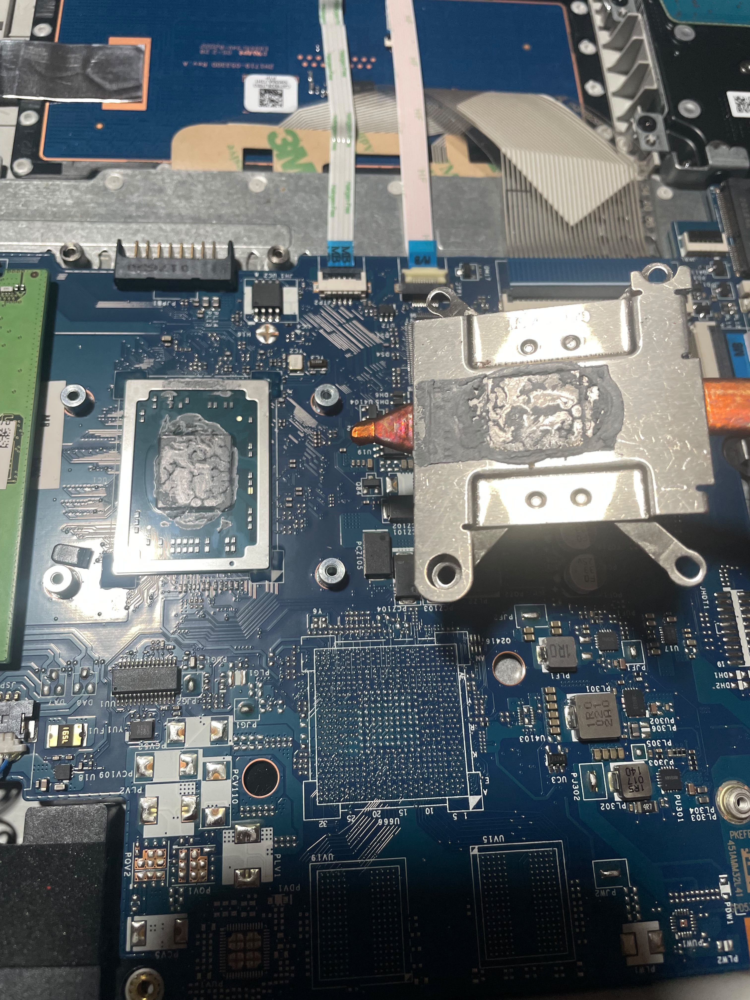
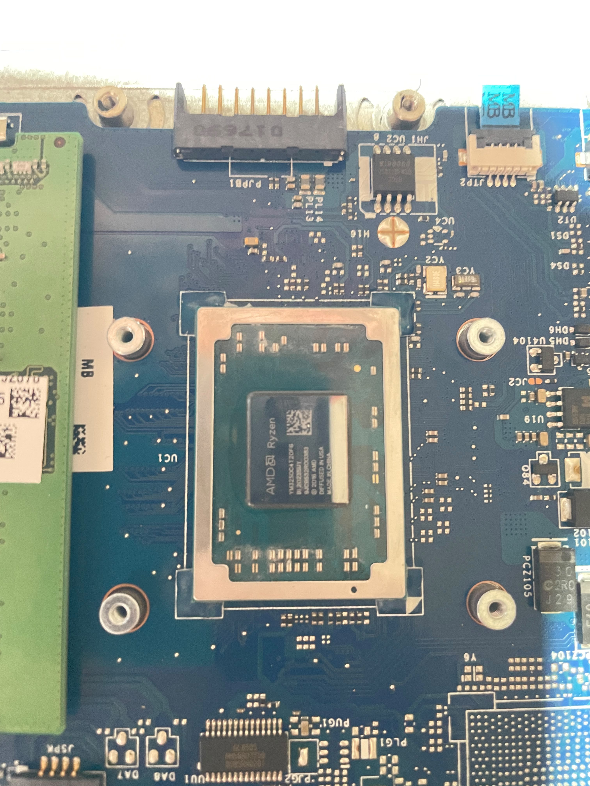
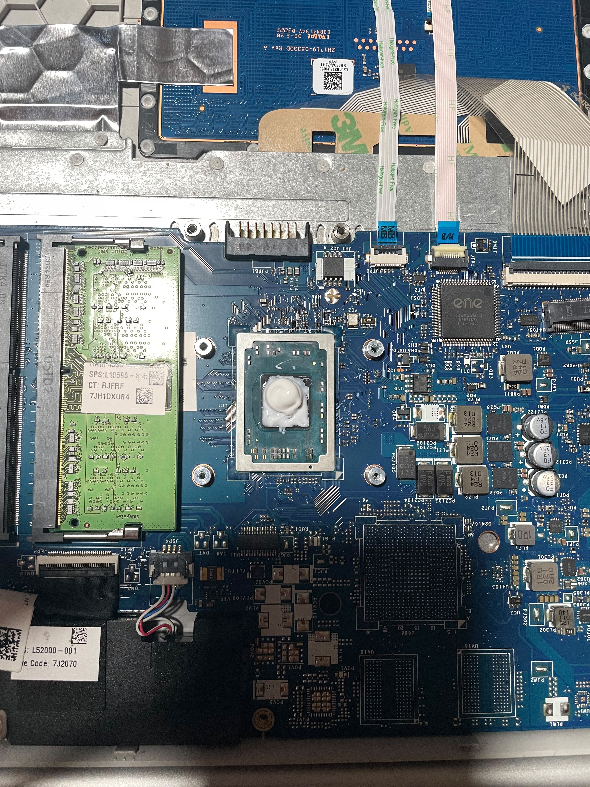
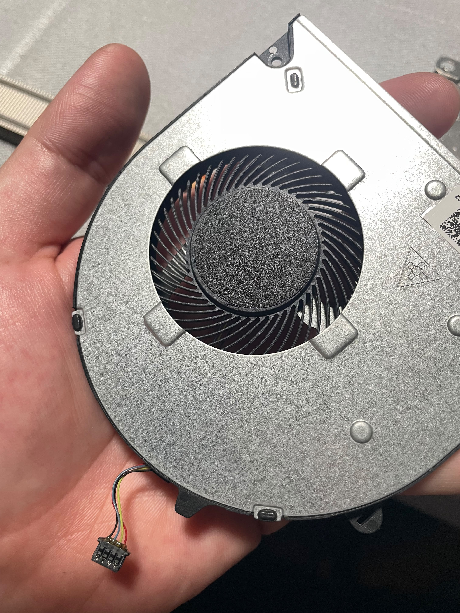
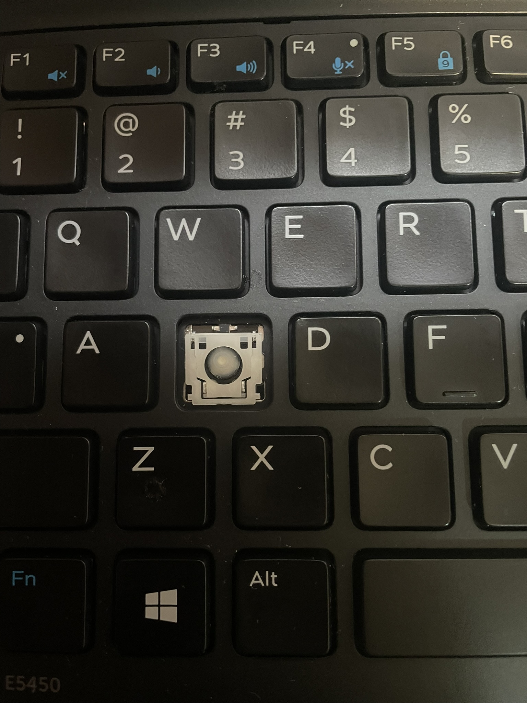
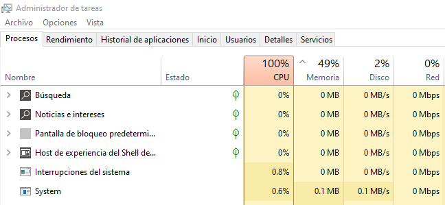
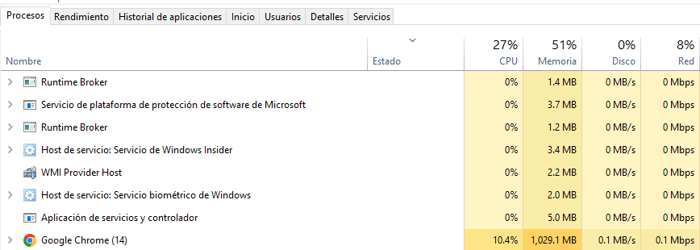

Descripción General
Experiencia práctica en mantenimiento preventivo y correctivo de equipos de cómputo, incluyendo diagnóstico de fallas, actualización de hardware, reinstalación de sistemas operativos y configuración de software.
Mantenimiento Preventivo
- Limpieza interna de componentes.
- Limpieza de ventiladores.
- Reemplazo de pasta térmica.
- Inspección general del hardware.
Mantenimiento Correctivo
- Diagnóstico de fallas de hardware.
- Sustitución de unidades HDD por SSD.
- Ampliación de memoria RAM.
- Diagnóstico de problemas de rendimiento.
Instalación y Configuración de Software
- Reinstalación de Windows.
- Instalación de Microsoft Office.
- Instalación de navegadores web.
- Configuración y activación de Microsoft Defender Antivirus.
- Verificación del funcionamiento del sistema operativo.
Diagnóstico y Optimización
- Revisión del rendimiento del sistema.
- Identificación de procesos de alto consumo.
- Verificación de recursos de hardware.
- Pruebas generales de funcionamiento.
Evidencia Fotográfica
Documentación de procedimientos de mantenimiento preventivo y correctivo de equipos de cómputo, enfocados en la conservación del hardware, diagnóstico de fallas y optimización del funcionamiento.
1. Inspección general del equipo

Objetivo: Evaluar las condiciones físicas de los componentes internos del equipo.
Procedimiento: Inspección visual de los componentes, conexiones internas y sistema de refrigeración para identificar acumulación de polvo, daños físicos o anomalías visibles.
2. Limpieza interna de componentes

Objetivo: Eliminar polvo y residuos acumulados en el interior del equipo.
Procedimiento: Limpieza de componentes internos y superficies accesibles, prestando especial atención a las áreas de ventilación y refrigeración.
3. Revisión del procesador

Objetivo: Inspeccionar el área del procesador y su sistema de disipación térmica.
Procedimiento: Revisión visual del área del procesador, disipador de calor y condiciones de contacto entre los componentes.
4. Preparación para cambio de pasta térmica

Objetivo: Preparar la superficie de contacto para la aplicación de pasta térmica nueva.
Procedimiento: Retiro de residuos de pasta térmica anterior y limpieza de las superficies de contacto del procesador y disipador.
5. Aplicación de pasta térmica nueva

Objetivo: Favorecer la transferencia de calor entre el procesador y el disipador.
Procedimiento: Aplicación de pasta térmica nueva y reinstalación del sistema de refrigeración del equipo.
6. Mantenimiento del ventilador

Objetivo: Mantener el sistema de ventilación libre de obstrucciones.
Procedimiento: Limpieza del ventilador y eliminación de polvo acumulado en sus aspas y áreas de ventilación.
7. Revisión y reparación de componentes

Objetivo: Identificar posibles fallas físicas en los componentes del equipo.
Procedimiento: Inspección de componentes externos, revisión de conexiones y evaluación de las condiciones generales del hardware.
Comparativa de rendimiento
Se realizó una evaluación del rendimiento del equipo antes y después de las actividades de mantenimiento, con el objetivo de identificar cambios en el consumo de recursos del sistema.
Antes del mantenimiento

Se identificó un consumo elevado de recursos del sistema.
Después del mantenimiento

Se realizó una evaluación del rendimiento después de las actividades de mantenimiento.

Posteriormente se observaron valores de utilización del procesador entre 10% y 50%, dependiendo de las tareas ejecutadas.